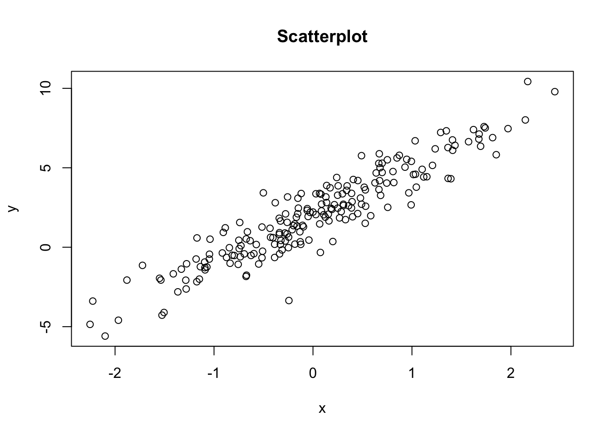
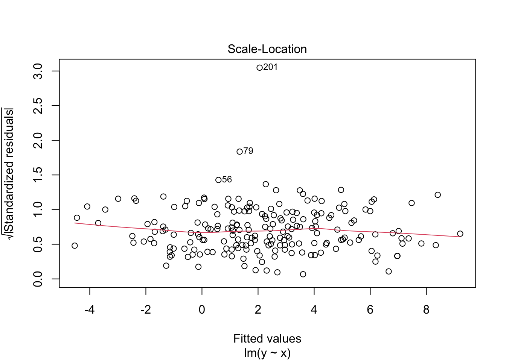
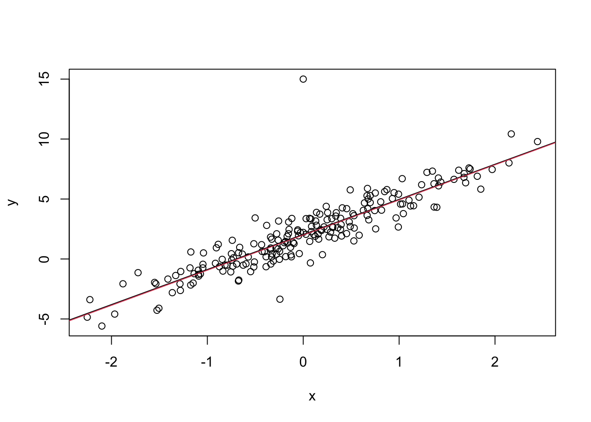
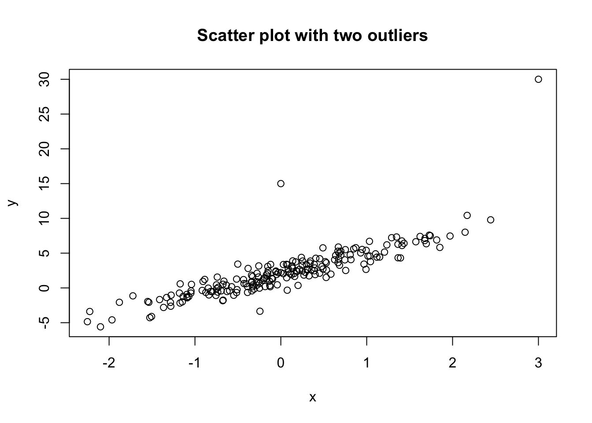

2 Multilevel Modelling Practical 1 (Week 2)
2.1 Instructions – start here!
The first part of this notebook (Exercise 1) takes you through a simple linear regression (using simulated data).
The second part of the notebook (Exercise 2) involves a multiple linear regression analysis of hourly wage data.
2.2 Exercises 1
Copy and paste the following code chunk which generates pairs \((x_1,y_1), (x_2,y_2),\ldots,(x_n,y_n)\) where \(n=200\).
We can visualise the data with a scatterplot:

- What distribution are the \(x\) and \(y\) values simulated from? Do histograms of \(x\) and \(y\) values match your answer?
Click for solution
Let \(X\) and \(Y\) be the random variables that the \(x\) and \(y\) values are simulations of (respectively). We have that \(X\sim N(0,1)\) and \(Y|X=x \sim N(2+3x,1)\). Hence \(Y\sim N(2,3^2+1^2)\equiv N(2,10)\).
Histograms are symmetric about 0 and 2, with most values between \(-3\) and \(+3\) (mean plus/minus 3 standard deviations) for \(x\), and between \(-7\) and \(+11\) for \(y\) (mean plus/minus roughly 3 standard deviations).- Calculate the Pearson correlation coefficient. How does this compare to the theoretical correlation? (Hint: recall that \(Cov(X,a+bX)=Cov(X,a)+Cov(X,bX)=bCov(X,X)=bVar(X)\) for constants \(a\) and \(b\).)
Click for solution
## [1] 0.9310128The theoretical covariance is \(Cov(X,Y)=Cov(X,2+3X)=3Var(X)=3\). Hence, the theoretical correlation between \(X\) and \(Y\) is \(3/\sqrt{Var(X)Var(Y)}=3/ \sqrt{10}=0.95\).
We can fit a linear regression model to these data and summarise the output via
##
## Call:
## lm(formula = y ~ x)
##
## Residuals:
## Min 1Q Median 3Q Max
## -4.6323 -0.6375 -0.0632 0.6329 2.9024
##
## Coefficients:
## Estimate Std. Error t value Pr(>|t|)
## (Intercept) 1.99094 0.07455 26.71 <2e-16 ***
## x 2.92914 0.08161 35.89 <2e-16 ***
## ---
## Signif. codes: 0 '***' 0.001 '**' 0.01 '*' 0.05 '.' 0.1 ' ' 1
##
## Residual standard error: 1.054 on 198 degrees of freedom
## Multiple R-squared: 0.8668, Adjusted R-squared: 0.8661
## F-statistic: 1288 on 1 and 198 DF, p-value: < 2.2e-16- Interpret this output. (At least three comments expected here!)
Click for solution
- The estimates of the intercept \(b_0\) and slope \(b_1\) are in agreement with the ground truth values that generated the data (\(\beta_0=2\), \(\beta_1=3\)).
- Unsurprisingly, the t-test of the null hypothesis that \(H_0:\beta_1=0\) suggests strong evidence against the null: it appears that the slope is needed. The F-test gives the same conclusion.
- The coefficient of determination is \(R^2=0.8668\) suggesting that almost 90% of the variation in \(Y\) is being explained by the regression on \(x\). Note that
## [1] 0.8667848- Reproduce the scatterplot and overlay the regression line. (Hint: recall the
abline()function and note thatcoef(model)gives the estimated intercept and slope.)
In what follows, it will be helpful to work with sorted (in increasing order) values of \(x\) and the associated values of \(y\). Hence execute the following code (and try to understand it):
Recall that the predict() function can be used to generate fitted values \(\hat{y}_i\), confidence and prediction intervals. The following code generates fitted values and the lower / upper limits of a 95% confidence interval for the mean response \(\beta_0+\beta_1 x_i\):
fit.y <- predict(model,newdata = data.frame(x),interval = "confidence")
head(fit.y) #inspect first few rows## fit lwr upr
## 1 -4.607650 -5.003545 -4.211755
## 2 -4.527100 -4.918888 -4.135311
## 3 -4.161157 -4.534383 -3.787930
## 4 -3.768590 -4.122093 -3.415088
## 5 -3.516371 -3.857319 -3.175424
## 6 -3.055568 -3.373856 -2.737279- Overlay (in red) on your plot from part 4 the 95% confidence interval for the expected response \(\beta_0+\beta_1 x_i\) for each \(x_i\). (Hint:
lines()will be useful here.)
Click for solution
- By using the
predict()function withinterval = "prediction", overlay (in green) on your plot from part 5 the 95% prediction interval for each \(y_i\). Comment.
Click for solution
The prediction interval is wider than the confidence interval, as expected (recall that the prediction interval takes into account the variance of the error term).- Check the regression assumptions of
model.
Click for solution


- Let’s add an outlying data point to our synthetic data set and look at the resulting scatter plot:
Fit the simple regression model again (call it model_out1) and check the assumptions. What do you notice?
Click for solution

The assumptions look reasonable. The outlier is not influential (Cook’s distance is less than 1 for the outlier). In fact, we can see that the outlier appears to have almost no affect on the line of best fit, whether it’s included or not.
plot(x,y)
abline(coef(model_out1))
abline(coef(model),col=2) #least squares line without the outlier
- Let’s add another outlying data point to our synthetic data set and look at the resulting scatter plot:

Fit the simple regression model again (call it model_out2) and check the assumptions. What do you notice?
Click for solution

The second outlier has high leverage (Cook’s distance greater than 1). In fact, you can see the effect of including it in the data set via:
The line of best fit obtained with the (second) outlier included in the data, has a larger slope coefficient than that obtained without the (second) outlier.2.3 Exercises 2
This exercise concerns the data set hwages consisting of 534 observations on 7 variables. We will focus on the following variables:
wages- hourly wage (in dollars). We will treat this as the response.workexp- work experience in years.education- schooling in years.sector- 0 for private and 1 for public (e.g. hospital, school etc).
Read in the data from Andy’s Github page with
Let’s also explicitly store the columns we will need as separate variables:
data <- hwages
wages <- data$wages #response / dependent variable
workexp <- data$workexp
educ <- data$education
sector <- as.factor(data$sector)- Plot a histogram of the dependent variable (
wages). Do you see any skewness? Is this a problem?
Click for solution
Indeed there is some skewness although this is not necessarily a problem. A skewed dependent variable does not violate any assumptions since we require normality of residuals, not variables.Let’s transform the response variable via the natural logarithm:
- How does a histogram of
lwagescompare to that in part 1?
Click for solution
The right skew appears to be alleviated by the transformation.- Denote by \(y_i\) the value of the log wage for person \(i\). Fit the model
\[ Y_i = \beta_0 + \beta_1 \textrm{education}_i + \beta_2 \textrm{sector}_i + \epsilon_i, \quad i=1,\ldots,n \]
with the result stored in model1. What do the results suggest for the predicted public sector hourly wage vs private? Hint: use lm() and summary(). Be careful with the interpretation - recall that the response is the natural logarithm of hourly wage.
Click for solution
##
## Call:
## lm(formula = lwages ~ educ + sector)
##
## Residuals:
## Min 1Q Median 3Q Max
## -2.08737 -0.35123 0.03087 0.33134 1.78649
##
## Coefficients:
## Estimate Std. Error t value Pr(>|t|)
## (Intercept) 1.165192 0.106130 10.979 <2e-16 ***
## educ 0.076848 0.007867 9.768 <2e-16 ***
## sector1 -0.232067 0.041254 -5.625 3e-08 ***
## ---
## Signif. codes: 0 '***' 0.001 '**' 0.01 '*' 0.05 '.' 0.1 ' ' 1
##
## Residual standard error: 0.475 on 531 degrees of freedom
## Multiple R-squared: 0.1928, Adjusted R-squared: 0.1898
## F-statistic: 63.42 on 2 and 531 DF, p-value: < 2.2e-16sector is \(-0.232\). Hence, with the educ variable held constant, the model suggests that average hourly log wages are reduced by \(-0.232\) for public sector workers. Hence, actual average hourly wage is reduced by a (multiplicative) factor of \((1-\exp(-0.232))\times 100=20\%\).
- We can set up functions to evaluate the equations of the two lines (one for
sector=0and one forsector=1) as functions of the variableeducas follows:
eq1 <- function(educ){coef(model1)[1]+coef(model1)[2]*educ} #private sector
eq2 <- function(educ){coef(model1)[1]+coef(model1)[2]*educ+coef(model1)[3]} #public sectorOverlay the fitted line by sector type on the scatterplot of lwages against educ. (Hint: first set up a vector of x values, e.g. using seq(), against which to plot the output of eq1 and eq2.)
Click for solution
x <- seq(min(educ),max(educ),0.1) #set up educ values at which to evaluate line
plot(educ,lwages)
lines(x,eq1(x),type="l",col="red") #private
lines(x,eq2(x),type="l",col="green") #publicsector=1 is shifted by the amount \(b_3=-0.232\).
- Add the variable named
workexptomodel1(that is, fit the multiple linear regression model with this additional predictor variable). Name the resulting modelmodel2.
- Interpret the coefficients of
model2in the context of both wage and log wage.
Click for solution
##
## Call:
## lm(formula = lwages ~ educ + sector + workexp)
##
## Residuals:
## Min 1Q Median 3Q Max
## -2.15504 -0.30764 0.00708 0.30955 1.99176
##
## Coefficients:
## Estimate Std. Error t value Pr(>|t|)
## (Intercept) 0.674929 0.120510 5.601 3.43e-08 ***
## educ 0.098006 0.008009 12.237 < 2e-16 ***
## sector1 -0.255947 0.039409 -6.495 1.92e-10 ***
## workexp 0.012668 0.001697 7.466 3.42e-13 ***
## ---
## Signif. codes: 0 '***' 0.001 '**' 0.01 '*' 0.05 '.' 0.1 ' ' 1
##
## Residual standard error: 0.4523 on 530 degrees of freedom
## Multiple R-squared: 0.2696, Adjusted R-squared: 0.2655
## F-statistic: 65.22 on 3 and 530 DF, p-value: < 2.2e-16- What does the adjusted \(R^2\) suggest about
model2compared tomodel1?
Click for solution
The adjusted R-squared is 0.2655 formodel2 versus 0.1898 for model1 suggesting a reasonable improvement in explained variation when moving to model2. These values are quite small though; only \(27\%\) of the variation in the response is explained by the regression on educ, sector and workexp is not great from a performance perspective!
- Run the command
anova(model1, model2). Which model (model1ormodel2) is preferred?
Click for solution
## Analysis of Variance Table
##
## Model 1: lwages ~ educ + sector
## Model 2: lwages ~ educ + sector + workexp
## Res.Df RSS Df Sum of Sq F Pr(>F)
## 1 531 119.83
## 2 530 108.42 1 11.403 55.743 3.417e-13 ***
## ---
## Signif. codes: 0 '***' 0.001 '**' 0.01 '*' 0.05 '.' 0.1 ' ' 1workexp variable is needed.
- Check the regression assumptions of
model2.
Click for solution
The Q-Q plots suggests that the normality assumption is reasonable. Plots of the residuals against fitted values show no obvious pattern (i.e. no fanning out; the constant variance assumption appears reasonable, and no systematic shape; the linear relationship between log wages and predictors appears reasonable). The last plot indicates some outliers but these do not appear to be of high leverage (according to Cook’s distance) so it is not necessary to remove them.End of lab!